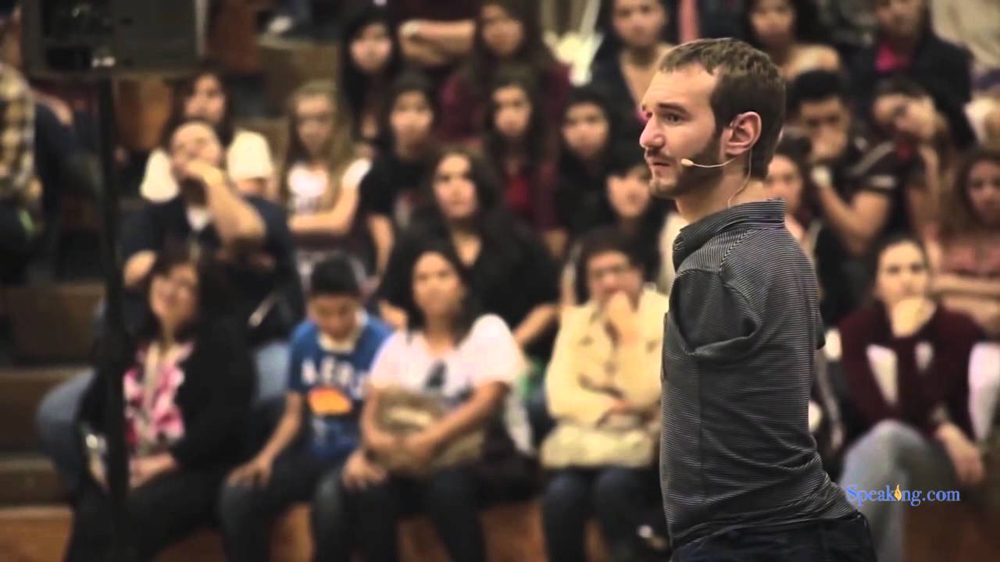
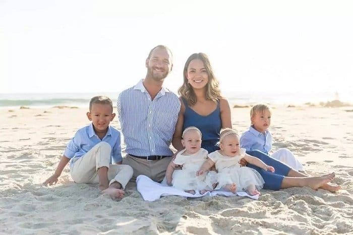

When Nick, as he is known, turned seventeen, he started delivering speeches in his church group. He earned a Bachelor's degree in Commerce, specializing in financial planning and accountancy, from the 'Griffith University' in Queensland.
As a speaker, he mainly addresses school children, young adults, and working professionals. He has also spoken at various churches, all across the globe, because he believes that Christ loves him as He loves all his children.
In his career, Nick has travelled to more than sixty countries around the world, and has touched the lives of millions of people. In 2005, he established an NGO named 'Life Without Limbs', which has its headquarters in Agoura Hills, California.
In the same year, Vujicic released the DVD of a documentary movie, titled 'Life's Greater Purpose'. The film talks about the motivational speaker's childhood, how he learned to use whatever was there of his limbs, and his married life.
In March 2008, Nick appeared in the '20/20' television series aired in the United States, for an interview, taken by presenter Bob Cummings.
In 2009, Vujicic featured in a short film titled 'The Butterfly Circus', directed by Joshua Weigel. It also starred Mexican actor, Eduardo Verástegui, and American Doug Jones.

The movie won a lot of accolades, including the first prize awarded by the 'Doorpost Film Project', and the 'Best Short Film' at the 'Method Fest Independent Film Festival', as well as the 'The Feel Good Film Festival'.
In 2010, Nick wrote a book, 'Life Without Limits: Inspiration for a Ridiculously Good Life', under the banner of publishing company, 'Random House'. He also released a DVD titled 'Biography of a Determined Man of Faith'.
Vujicic gave a heart-rending speech in Switzerland, at the 'World Economic Forum', for their Annual Meeting's special session, 'Inspired for a Lifetime', in 2011.